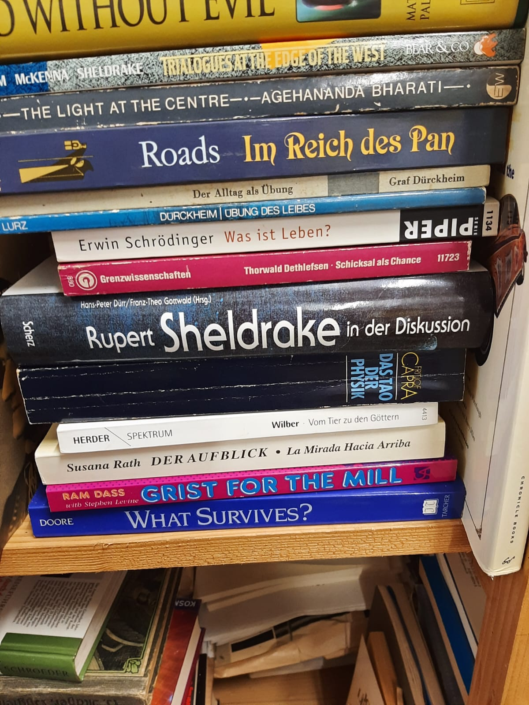

Eine Bibliothek, die zusammenhält, was sonst zerstreut wird
Sammeln & Bewahren
Private Sammlungen und Nachlässe kommen als Ganzes in die Bibliothek – statt einzeln verkauft, verstreut oder unachtsam entsorgt zu werden.
Zugänglich machen
Der Bestand wird schrittweise inventarisiert. Das Entleihen von Büchern ist Mitgliedern vorbehalten und wird durch den Vereinsvorstand geregelt.
Digitalisieren
Geplant sind die Digitalisierung der Archivmaterialien und der Aufbau einer KI-gestützten Onlinedatenbank für die Recherche im Bestand.
Orte schaffen
Regalflächen beim Nachtschatten Verlag in Solothurn, dezentrale Bestände in Zürich und neu ein Ort im Volkshaus Basel mit der Stiftung Gaia Media.
Die Bibliothek gibt es schon




Mit Gründung des Vereins Bibliotheca Psychonautica wurde der Grundstein gelegt für eine zukünftige Stiftung mit dem Ziel der Zusammenführung und Bewahrung fundierter Privatsammlungen von psychonautischer Literatur, Videos, DVDs, CDs, Schallplatten, Bildern, Fotos, Kunstwerken, Briefwechseln, Tagebüchern, Forschungsmaterial und Manuskripten, um eine möglichst umfangreiche drogen- und rauschkundliche Bibliothek aufzubauen, die das psychonautische Wissen über veränderte Bewusstseinszustände lebendig erhält.
SammlerInnen von psychonautischer Fachliteratur können ihre privaten Nachlässe dem Verein bzw. der Stiftung vermachen, um dieses wertvolle Material zu erhalten und anderen Interessenten zugänglich zu machen und es vor eigennützigen, gewinnorientierten und kommerziellen Absichten, aber auch vor unachtsamer Entsorgung zu schützen.
Für den Aufbau der Bibliothek stehen dem Verein seit Juli 2013 Regalflächen in den Räumen des Nachtschatten Verlages in Solothurn zur Verfügung. Teile der Sammlung befinden sich auch dezentral an anderen Orten (z.B. in Zürich).
Es sind bereits einige umfangreiche Sammlungen von Büchern und Journalen eingegangen, die schrittweise inventarisiert werden. Die Liste des bis jetzt erfassten Bibliotheksbestandes kann beim Verein angefordert werden. Das Entleihen von Büchern ist ausschliesslich Mitgliedern vorbehalten und wird durch den Vereinsvorstand geregelt.
So kommt eine Sammlung in die Bibliothek
Drei Schritte, ohne Eile und ohne Verpflichtung. Wir beraten auch Angehörige, die einen Nachlass ordnen müssen.
Kontakt aufnehmen
Eine kurze Mail genügt. Wir besprechen Umfang, Themen und Zeitrahmen – vertraulich.
Sichtung & Abholung
Wir sichten die Sammlung vor Ort, klären, was in die Bibliothek passt, und organisieren den Transport.
Inventarisierung & Zugang
Die Bestände werden erfasst und stehen Mitgliedern zur Recherche und Ausleihe zur Verfügung.
Was die Bibliothek bedeutet
[PLATZHALTER] Echte Zitate und Porträts werden derzeit gesammelt. Die drei Karten zeigen das vorgesehene Format.
«Die Bibliotheca ist ein unfassbarer Schatz der psychedelischen Kulturgeschichte.»
[PLATZHALTER] nicht bestätigt
«[PLATZHALTER] Zitat einer Forscherin oder eines Forschers, zwei bis drei Zeilen.»
Rolle, Institution
«[PLATZHALTER] Zitat einer Sammlerin oder eines Nachlassgebers.»
Rolle, Institution
Aus dem Archiv
Neuer Ort: Volkshaus Basel mit Gaia Media
In Zusammenarbeit mit der Stiftung Gaia Media entsteht ein weiterer physischer Ort für die Sammlung. [PLATZHALTER] Text folgt.
Nachlass Christian Rätsch: erste Kisten
[PLATZHALTER] Teaser von zwei bis drei Zeilen, der beschreibt, was auf den Fotos zu sehen ist.
[PLATZHALTER] Titel des Beitrags
[PLATZHALTER] Teaser von zwei bis drei Zeilen.
Stiftung Gaia Media, Zürich – Partnerin für den neuen Ort in Basel.
Basel
Neuer physischer Ort der Sammlung, in Zusammenarbeit mit Gaia Media.
Verlag
Solothurn – stellt dem Verein seit Juli 2013 Regalflächen zur Verfügung.
Hilf mit
Für den weiteren Aufbau der Bibliotheca Psychonautica brauchen wir dringend aktive und passive Mitglieder sowie grosszügige Gönner und Sponsoren!
Bei Interesse sende eine Mail an info@bibliotheca-psychonautica.org oder nutze das Formular für Mitteilungen und Anfragen.